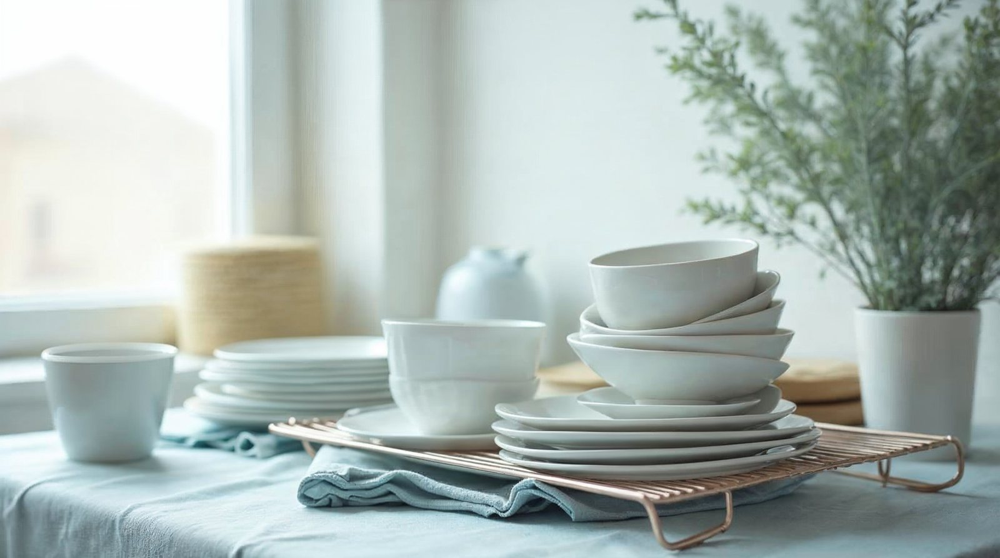
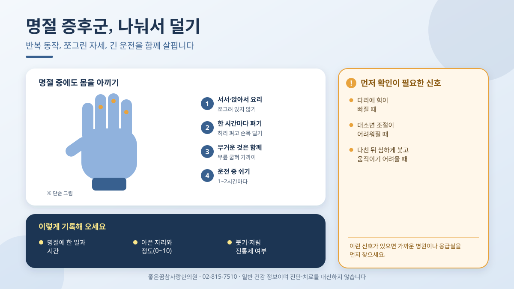

이종호 한의사 감수좋은꿈참사랑한의원 대표원장 (한의사 면허번호 19769)발행 2026-11-26 · 수정 2026-11-26
이 글의 차례
명절 연휴 마지막 날 저녁, 손님들이 다 돌아가고 설거지까지 끝내고 나니 그제야 허리가 펴지지 않는다는 것을 느낍니다. 전을 뒤집던 오른 손목은 시큰하고, 쪼그려 앉아 일하던 무릎은 뻣뻣합니다. 다음 날 출근해야 하는데 온몸이 몸살처럼 쑤시고 머리까지 무겁습니다.
명절이 지나고 나면 진료실에는 이런 분들이 부쩍 늘어납니다. "명절만 지나면 꼭 몸살이 나요." "손목이 아파서 행주도 못 짜겠어요." 장거리 운전으로 목과 허리가 굳었다는 분, 며칠 내내 잠을 설쳐 피곤이 가시지 않는다는 분도 많습니다.
명절 증후군은 정식 병명은 아니지만, 명절 동안 몸과 마음에 쌓인 부담이 한꺼번에 드러나는 모습을 묶어 부르는 말입니다. 대개는 며칠 쉬면 가라앉지만, 해마다 반복되거나 손목과 허리 통증이 오래 남는다면 한번 살펴볼 필요가 있습니다. 오늘은 명절 증후군이 왜 생기는지, 명절 중과 뒤에 어떻게 몸을 돌보면 좋은지 정리해 보겠습니다.
명절 증후군은 어떤 모습으로 나타나나요?
가장 흔한 것은 손목과 허리, 어깨의 통증입니다. 전을 부치며 뒤집개를 수백 번 쥐었다 놓고, 무거운 냄비와 그릇을 들고, 칼질을 오래 하고 나면 손목과 엄지 쪽이 시큰하고 붓습니다. 행주를 짜거나 병뚜껑을 열 때 찌릿하다고 말씀하시는 분도 많습니다.
허리는 쪼그려 앉거나 바닥에 앉아 오래 일하면서, 또 무거운 상과 짐을 들면서 부담을 받습니다. 일어설 때 허리가 바로 펴지지 않고, 엉치까지 묵직하게 당깁니다. 무릎과 발목이 뻣뻣하고 붓는 분도 있습니다.
몸 전체로는 몸살처럼 온몸이 쑤시고, 기운이 없으며, 머리가 무겁습니다. 기름진 음식과 과식으로 속이 더부룩하고, 변비나 설사가 생기기도 합니다. 며칠 동안 잠자리가 바뀌고 늦게까지 이야기를 나누다 보니 잠도 부족합니다.
왜 명절이 지나면 몸이 이렇게 아플까요
첫째는 평소와 다른 일을 짧은 기간에 몰아서 하기 때문입니다. 평소에는 하지 않던 반복 동작을 하루 몇 시간씩, 며칠 동안 이어 하면 손목의 힘줄과 허리 근육이 회복할 틈 없이 쓰입니다. 힘줄과 근육에 작은 자극이 쌓이면 붓고 아파 옵니다.
둘째는 자세입니다. 바닥에 쪼그려 앉거나 양반다리로 오래 앉아 일하면 허리가 둥글게 굽고 무릎이 깊게 접힙니다. 이 자세로 몇 시간을 보내면 허리 근육과 디스크, 무릎 관절에 부담이 크게 쌓입니다. 앉았다 일어나며 무거운 것을 드는 동작이 겹치면 허리를 삐끗하기도 쉽습니다.
셋째는 장거리 이동입니다. 막히는 도로에서 몇 시간씩 운전하면 같은 자세로 목과 허리가 굳고, 다리가 붓습니다. 좁은 뒷좌석에 오래 앉아 있는 가족도 마찬가지입니다. 운전하는 동안 긴장하며 핸들을 쥐고 있으면 어깨와 손목에도 힘이 들어갑니다.
넷째는 잠과 식사, 마음입니다. 잠자리가 바뀌고 늦게 자며 일찍 일어나는 날이 이어지면 몸이 회복할 시간이 부족합니다. 기름진 음식과 과식은 속을 무겁게 하고, 가족 모임에서 오가는 말과 해야 할 일에 대한 부담은 마음을 지치게 합니다. 몸이 긴장하면 같은 통증도 더 크게 느껴집니다.
한의학에서는 무리한 일로 기운이 소모되고 근육과 힘줄이 지친 모습을 과로로 몸이 상한 상태로 설명해 왔습니다. 진찰에서 쓰는 전통적인 표현이고 따로 진단명은 아니지만, 쉬고 회복할 시간이 통증만큼 중요하다는 점을 잘 보여 주는 시각입니다.
그냥 몸살일까요, 손목이나 허리 문제가 따로 있을까요?
명절 뒤 몸살은 대개 며칠 푹 쉬면 가라앉습니다. 그런데 손목이나 허리 한 곳의 통증이 일주일이 지나도 줄지 않거나, 점점 심해진다면 그 자리의 문제를 따로 살펴봐야 합니다.
엄지 쪽 손목이 붓고 엄지를 움직일 때 찌릿하다면 손목 힘줄에 염증이 생기는 건초염을 떠올려 봅니다. 손가락이 저리고 밤에 손이 찌릿해 깬다면 손목터널증후군도 살펴봅니다. 이런 손목 문제는 명절처럼 손을 많이 쓴 뒤에 처음 드러나는 경우가 많습니다.
허리를 삐끗한 뒤 움직이기 힘들 만큼 아프다면 급성 요추 염좌를 생각하고, 허리 통증이 엉덩이와 다리로 뻗치며 저리다면 디스크 문제도 함께 살펴야 합니다. 이런 경우에는 정형외과 검사가 필요할 수 있습니다.
열이 나고 목이 아프며 기침이 함께 있다면, 명절 증후군보다 감기나 독감을 먼저 생각합니다. 여러 사람이 모이는 명절에는 감염도 쉽게 옮기 때문입니다.
명절 증후군을 더 쉽게 겪는 분들
음식 준비를 도맡아 하시는 분이 가장 먼저 떠오릅니다. 며칠 전부터 장을 보고 재료를 손질하며, 명절 당일에는 새벽부터 밤까지 부엌에 서 계십니다. 평소 손목이나 허리가 약했던 분이라면 부담이 더 큽니다.
장거리 운전을 하시는 분, 아이를 안고 다니며 여러 집을 오가는 부모님, 손님을 맞으며 하루 종일 움직이시는 어르신도 명절 뒤 몸살을 쉽게 겪으십니다. 평소 운동이 부족하거나 잠이 짧았던 분은 같은 일에도 더 빨리 지칩니다. 연세가 드실수록 회복에 걸리는 시간도 길어집니다.
마음의 부담이 큰 분도 명절 증후군을 크게 겪으십니다. 해야 할 일, 가족 사이의 말과 관계에 대한 걱정이 명절 전부터 쌓이면, 몸이 긴장한 채로 명절을 맞게 됩니다. 이런 긴장은 어깨와 목을 굳게 하고 잠을 얕게 만듭니다.
먼저 이렇게 여쭙니다
처음 오시면 대략 이런 순서로 여쭙니다. 미리 떠올려 오시면 이야기가 수월해집니다.
- 가장 아픈 곳은 어디이고, 명절 전에도 아팠던 자리인가요?
- 명절 동안 어떤 일을, 어떤 자세로, 몇 시간쯤 하셨나요?
- 무거운 것을 들다 '뚝' 하거나 삐끗한 순간이 있었나요?
- 손이 저리거나 다리로 뻗치는 통증이 있나요?
- 아픈 곳이 붓거나 열감이 있나요?
- 명절 동안 잠은 몇 시간 주무셨나요? 속은 편하셨나요?
- 드시는 진통제나 다른 약이 있나요?
정확히 기억나지 않으셔도 괜찮습니다. '전을 이틀 동안 부치고 나서 오른 손목이 시큰하다'처럼 흐름만 말씀해 주셔도 충분합니다.
일상에서 먼저 해 볼 수 있는 것
명절 증후군은 명절이 끝난 뒤보다 명절 동안 조금씩 아껴 주는 것이 더 쉽습니다.
- 바닥에 쪼그려 앉기보다 식탁이나 작업대에 서서, 또는 의자에 앉아 음식 만들기
- 한 시간에 한 번은 일어나 허리를 펴고 손목을 털어 주기
- 무거운 상과 냄비는 혼자 들지 말고 함께 들기, 들 때는 무릎을 굽혀 몸 가까이 들기
- 일은 가족이 나눠 맡고, 한 사람에게 몰리지 않게 하기
- 장거리 운전은 1~2시간마다 휴게소에서 쉬며 몸 풀기
- 기름진 음식은 조금씩 덜어 먹고, 채소와 따뜻한 국을 곁들이기
전을 부칠 때는 뒤집개를 쥔 손목이 꺾이지 않도록 팔 전체로 움직이고, 가끔 손을 바꿔 쓰는 것도 도움이 됩니다. 칼질이 많을 때는 칼을 잘 갈아 두면 손목에 들어가는 힘이 줄어듭니다.
음식의 양을 줄이는 것도 방법입니다. 해마다 남는 음식을 떠올려 보시고, 꼭 필요한 것만 준비하거나 일부는 사서 쓰는 것을 가족과 미리 상의해 보세요. 일이 줄면 몸도 마음도 한결 가벼워집니다.
명절 며칠 전부터 몸을 준비하는 것도 좋습니다. 평소 손목과 허리가 약하신 분이라면 명절 일주일 전부터 손목을 천천히 돌리고, 아침저녁으로 허리와 허벅지를 가볍게 늘려 두세요. 잠을 미리 충분히 자 두는 것도 명절을 버티는 힘이 됩니다.
장거리 운전을 하신다면
명절의 장거리 운전은 생각보다 몸에 큰 부담을 줍니다. 출발 전에 운전석을 몸에 맞게 조절해 주세요. 등받이는 너무 눕히지 말고 엉덩이를 깊숙이 넣어 앉으며, 허리 뒤에 작은 쿠션이나 말아 둔 수건을 받치면 허리의 곡선을 지키는 데 도움이 됩니다.
핸들은 팔꿈치가 살짝 굽혀지는 거리에서 잡고, 어깨에 힘이 들어가지 않게 해 주세요. 막히는 도로에서는 신호를 기다리는 사이 어깨를 으쓱했다 내리고, 목을 천천히 좌우로 기울여 굳은 근육을 풀어 주시면 좋습니다.
1~2시간마다 휴게소에 들러 차에서 내려 5분이라도 걷고, 허리를 뒤로 살짝 젖히거나 종아리를 늘려 주세요. 운전을 번갈아 할 수 있다면 나눠서 하는 것이 몸에도 안전에도 좋습니다. 졸음이 오면 참지 말고 쉬어 가세요.
명절이 끝난 뒤 회복하는 방법
명절 뒤에는 몸이 회복할 시간을 먼저 챙겨 주세요. 가능하다면 연휴 마지막 날 하루는 일정을 비워 두고 쉬는 날로 정해 두시면 좋습니다.
아픈 손목과 허리는 처음 하루 이틀, 붓고 열감이 있다면 차가운 찜질을 10~15분 해 주시고, 붓기가 가라앉은 뒤에는 따뜻한 찜질로 굳은 근육을 풀어 주세요. 손목은 무리하게 짜거나 비트는 동작을 며칠 쉬게 해 주시는 것이 좋습니다.
허리가 뻐근하다면 하루 종일 누워 있기보다 아프지 않은 범위에서 천천히 걷는 것이 회복에 도움이 됩니다. 아침에 일어나기 전 누운 채로 무릎을 가슴 쪽으로 천천히 당겼다 놓는 동작을 몇 번 해 보세요.
잠과 식사도 평소 리듬으로 빨리 되돌려 주세요. 명절 동안 늦어진 잠드는 시각을 원래대로 맞추고, 기름진 음식으로 지친 속은 며칠 동안 담백하고 따뜻한 음식으로 쉬게 해 주시면 좋습니다.
마음도 함께 돌봐 주세요. 명절 동안 애쓴 자신에게 수고했다고 말해 주고, 가까운 사람과 서운했던 점이나 힘들었던 점을 차분히 나눠 보는 것도 도움이 됩니다. 마음의 짐을 내려놓으면 몸의 긴장도 함께 풀리는 경우가 많습니다.
한의원에서 함께 살필 수 있는 경우
- 명절 뒤 손목이 시큰하고 붓거나 엄지 쪽이 찌릿한 경우
- 쪼그려 앉아 일한 뒤 허리와 무릎이 뻣뻣하고 아픈 경우
- 장거리 운전 뒤 목과 어깨, 허리가 굳어 풀리지 않는 경우
- 명절 뒤 몸살처럼 온몸이 쑤시고 기운이 없는 경우
- 명절 음식으로 속이 더부룩하고 잠까지 얕아진 경우
좋은꿈참사랑한의원에 오시면 먼저 아래 '먼저 확인이 필요한' 신호가 없는지부터 봅니다. 그다음 맥을 짚고, 아픈 손목과 허리를 직접 만지고 움직여 보며 붓기와 굳은 자리, 아픈 동작을 확인합니다.
진찰 내용을 바탕으로 생활에서 바꿔 볼 것 하나와 함께 침, 약침, 추나, 온열 관리, 한약 상담 가운데 지금 상태에 맞는 것을 정합니다. 한약을 상의할 때는 드시는 약을 모두 확인하고 신중하게 정하며, 임신 중이시거나 가능성이 있다면 먼저 알려 주세요. 산부인과 선생님과 상의하는 것이 우선입니다.
다리 저림이 심하거나 손 저림이 오래간다면 정형외과 검사를 함께 권해 드립니다. 처방받은 약은 상의 없이 멈추지 않고, 한의원 진료는 그 진료와 나란히 갑니다.
이렇게 기록해 오시면 상담이 쉬워집니다
명절 뒤 일주일 정도 간단히 적어 보시면 회복의 흐름이 보입니다.
- 명절 동안 한 일과 대략의 시간(음식 준비, 운전, 손님 맞이)
- 가장 아픈 자리와 아픈 정도(0~10)
- 아픈 동작(행주 짜기, 일어서기, 고개 돌리기 등)
- 붓기나 열감, 저림이 있었는지
- 잠든 시각과 잠의 깊이
- 드신 진통제와 찜질 여부
기록이 있으면 다음 명절을 준비할 때 어떤 일을 줄이고 어떤 자세를 바꿀지 미리 정할 수 있습니다. 가족과 함께 기록을 보며 일을 어떻게 나눌지 이야기해 보시는 것도 좋습니다.

다음 명절은 조금 덜 아프게
명절 증후군은 가족을 위해 애쓴 시간이 몸에 남긴 흔적입니다. 그 수고를 당연하게 여기기보다, 몸이 보내는 신호로 받아들이고 돌봐 주시면 좋겠습니다.
이번에는 의자에 앉아 음식 만들기, 한 시간마다 허리 펴기, 연휴 마지막 날 쉬는 날로 비워 두기 가운데 하나만 골라 보세요. 다음에 오시면 명절 뒤 기록을 함께 펼쳐 보며 다음 명절을 어떻게 준비할지 같이 이야기해 보겠습니다.
이런 증상은 먼저 확인이 필요합니다
- 허리 통증과 함께 다리에 힘이 빠지거나 대소변 조절이 어려워진 경우
- 넘어지거나 무거운 것을 들다 다친 뒤 손목·허리가 심하게 붓고 움직이기 어려운 경우
이런 신호가 있으면 한의원보다 가까운 병원이나 응급실을 먼저 찾으세요.
함께 읽으면 좋은 글
- 아기를 안거나 휴대폰을 쥘 때 엄지 쪽 손목이 찌릿한 드퀘르뱅 건초염은 어떻게 살피나요?
- 허리를 삐끗해 움직이기 힘든 급성 요추 염좌는 첫 며칠 어떻게 살피나요?
- 명절 음식을 과식하지 않으려면 어떻게 하면 좋을까요?
- 명절이나 연휴가 다가올 때는 한의원 방문 전에 무엇을 확인하면 되나요?
- 평일 내내 긴장하다 주말만 되면 몸살처럼 아플 때는 어떻게 살피나요?

여쭙는 것
- 가장 아픈 곳은 어디이고, 명절 전에도 아팠던 자리인가요?
- 명절 동안 어떤 일을, 어떤 자세로, 몇 시간쯤 하셨나요?
- 무거운 것을 들다 '뚝' 하거나 삐끗한 순간이 있었나요?
생활에서 해 볼 것
- 바닥에 쪼그려 앉기보다 식탁이나 작업대에 서서, 또는 의자에 앉아 음식 만들기
- 한 시간에 한 번은 일어나 허리를 펴고 손목을 털어 주기
- 무거운 상과 냄비는 혼자 들지 말고 함께 들기, 들 때는 무릎을 굽혀 몸 가까이 들기
한의원에서 함께 살필 것
- 명절 뒤 손목이 시큰하고 붓거나 엄지 쪽이 찌릿한 경우
- 쪼그려 앉아 일한 뒤 허리와 무릎이 뻣뻣하고 아픈 경우
- 장거리 운전 뒤 목과 어깨, 허리가 굳어 풀리지 않는 경우
먼저 확인이 필요한 신호
- 허리 통증과 함께 다리에 힘이 빠지거나 대소변 조절이 어려워진 경우
- 넘어지거나 무거운 것을 들다 다친 뒤 손목·허리가 심하게 붓고 움직이기 어려운 경우
한눈에 보는 표
| 구분 | 핵심 |
|---|---|
| 여쭙는 것 | 가장 아픈 곳은 어디이고, 명절 전에도 아팠던 자리인가요? 명절 동안 어떤 일을, 어떤 자세로, 몇 시간쯤 하셨나요? |
| 생활에서 해 볼 것 | 바닥에 쪼그려 앉기보다 식탁이나 작업대에 서서, 또는 의자에 앉아 음식 만들기 한 시간에 한 번은 일어나 허리를 펴고 손목을 털어 주기 |
| 한의원에서 함께 살필 것 | 명절 뒤 손목이 시큰하고 붓거나 엄지 쪽이 찌릿한 경우 쪼그려 앉아 일한 뒤 허리와 무릎이 뻣뻣하고 아픈 경우 |
| 먼저 확인이 필요한 신호 | 허리 통증과 함께 다리에 힘이 빠지거나 대소변 조절이 어려워진 경우 넘어지거나 무거운 것을 들다 다친 뒤 손목·허리가 심하게 붓고 움직이기 어려운 경우 |
자주 묻는 질문
명절 뒤 몸살은 며칠이면 괜찮아지나요?
대개는 며칠 푹 쉬고 잠과 식사를 평소대로 되돌리면 가라앉는 경우가 많습니다. 일주일이 지나도 한 곳의 통증이 줄지 않거나 점점 심해진다면 진료를 받아 보세요.
손목이 아플 때 찜질은 따뜻하게 하나요, 차갑게 하나요?
붓고 열감이 있는 처음 하루 이틀은 차가운 찜질을, 붓기가 가라앉은 뒤에는 따뜻한 찜질을 권합니다. 손목을 비트는 동작은 며칠 쉬게 해 주세요.
명절 연휴에도 한의원 진료를 받을 수 있나요?
연휴 진료 일정은 명절마다 달라질 수 있어서 방문 전에 전화로 확인해 주시길 권합니다.
명절 뒤 허리가 아픈데 파스만 붙여도 될까요?
가벼운 뻐근함이라면 쉬면서 찜질과 가벼운 걷기로 지켜볼 수 있습니다. 다리로 뻗치는 통증이나 저림이 있다면 진료를 받아 원인을 확인하시는 것이 좋습니다.
해마다 명절이 다가오면 마음부터 무거워요.
많은 분이 겪는 마음입니다. 해야 할 일을 가족과 미리 나누고, 명절 뒤 쉬는 날을 정해 두는 것만으로도 부담이 조금 줄어들 수 있습니다. 마음이 오래 무겁다면 함께 이야기 나눠 보세요.
좋은꿈참사랑한의원은 재진 때 지난번 이야기부터 이어서 여쭙니다. 진료시간과 예약은 오시는 길에서 확인하세요.
어디서 상담받을 수 있나요?
좋은꿈참사랑한의원은 서울 동작구 만양로2길 2 신성빌딩 3층·5층(서울 동작구 상도동, 7호선 상도역 3번 출구 근처)에 있습니다. 한의사 3명(이종호 대표원장, 조영기 수석진료원장, 정원영 진료원장)이 진료합니다. 진료시간은 평일 09:30~20:00(점심 13:00~14:00), 토·일·공휴일 09:30~15:00이며, 방문 전 전화로 확인을 권합니다. 예약은 네이버 예약, 카카오톡 상담, 전화 02-815-7510로 받습니다.
이 글은 일반적인 건강 정보이며 개인의 진단이나 치료를 대신하지 않습니다. 증상이 있거나 복용 중인 약이 있다면 진료를 통해 확인하세요. 치료 효과는 개인마다 다를 수 있습니다.
작성 기준: 일반적으로 알려져 있는 건강 정보를 참고해 정리했습니다(대표원장 감수). 증상 기록은 1~2주 동안 하루 1회, 비슷한 시간에 적어 오시면 지난 상태와 비교하기 쉽습니다.